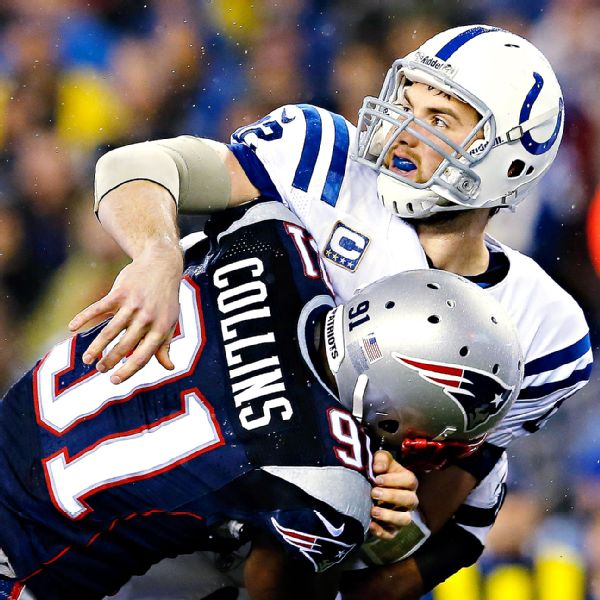

Schedule
Results
DRAFT PICKS
Round 2, Pick 52: Jamie Collins, DE/LB, Southern Miss
With the 52nd overall pick, the Patriots wasted no time making their annual pick that leaves the fans and pundits all scratching their heads. Jamie Collins was projected by most draft pundits as a mid-round selection, but the Pats took him with their first pick of the draft in the mid-second round.
Collins was under most radars, especially this early in the draft, but he's a versatile and athletic player who can contribute at defensive end, outside linebacker and even middle linebacker. His athletic potential was described by one scout as "off the charts".
For those wanting to add a defensive front seven player who can do a number of things, including getting after the quarterback, Collins is a solid addition, with a great deal of upside.
However, it's likely that Collins would've been available later in the draft, just as Tavon Wilson likely would've been in 2012 when they drafted him in the second round. On paper, it doesn't seem like a great value pick, but there's definitely potential in Collins to be used in a variety of ways by Bill Belichick all over his defense.
Round 2, Pick 59: Aaron Dobson, WR, Marhsall
After leaving their fan base scratching their head with their first pick, the Patriots made a pick everyone thought they should by taking wide receiver Aaron Dobson with their second second-round pick.
Dobson was on most Pats pundits' radars and for good reason. Why not try to finally replace the X-receiver void Randy Moss left with the best receiver to come out of Marshall since Moss?
What stands out most about Dobson? His size at 6'3", 210-pounds, literally head and shoulders above every other receiver currently on the Patriots roster. Dobson caught 15 touchdowns the last two seasons, and should instantly give Tom Brady a big outside target that he's lacked since Moss was traded.
Now the real work begins for Dobson, and that is picking up the offense and getting on the same page as Brady, but from our view this is a slam dunk pick.
Round 3, Pick 83: Logan Ryan, CB, Rutgers
The Patriots had success with Rutgers cornerback Devin McCourty in 2010 and once again tapped a defensive back from the school, taking Logan Ryan with their first pick in the third round.
Ryan doesn't have great speed, but very good ball skills, physicality and leadership traits. The Pats needed depth in the secondary from the draft. They return all of their starters, but no position is more often ravaged by injuries than at defensive back.
While Ryan's fit will be determined once training camp and injuries play out, he brings the kind of intangibles the Patriots always look for. He's active, physical, and often finds himself around the football, and having played for Greg Schiano early in his career, Belichick surely got the full inside scoop on him.
The Pats won't need Ryan to step in and start immediately, but he could end up playing a significant role down the line.
Round 3, Pick 91: Duron Harmon, S, Rutgers
The Patriots continued a couple of their draft trends by selecting Rutgers safety Duron Harmon late in the third round.
First, and most obvious, is taking their second Rutgers defender in nine picks, and second, Harmon represents the first non-combine player selected in this year's draft. The Patriots have taken non-combine participants Tavon Wilson and Sebastian Vollmer in recent seasons as well.
Most sites and pundits projected Harmon as a "priority free agent". He appears to be similar physical build to Tavon Wilson at 6'0", 196-pounds, serving as a strong safety at Rutgers, while also playing in space as a free safety on a number of snaps.
Given the Patriots depth at safety, it's hard to project how Harmon could possibly crack the lineup, but it's clear that Belichick saw enough in him to use a third-round pick.
As the pundits begin to dig through tape to find what exactly the Pats saw in Harmon, we're left scratching our heads a bit, especially given the remaining need at wide receiver and number of quality players still available.
Round 4, Pick 102: Josh Boyce, WR, TCU
Many suspected the Patriots would "double-dip" on wide receivers and they did just that, selecting TCU wide receiver Josh Boyce early in the fourth round to go with second-round pick Aaron Dobson.
Boyce was a player on our radar from the start, he's played both inside and outside, competes hard and is a polished route runner. If there's a knock on him, it's that his frame is already maxed out at 5'11" and 210 pounds.
Still, he has elite meaurables, as evidenced by his 4.38 40-yard-dash, 6.68 second three-cone drill at the combine. He will bring both speed and quickness to an receiver corps that is in transition.
The Patriots already got a potential X-receiver in Dobson, and now in Boyce they get a potential all-around receiver to develop as well.
They've addressed their biggest overall need with two explosive players, regardless of the other picks, this draft already has to be considered a win for the Patriots.
Trade for LeGarrette Blount
There were rumors before the draft that the Patriots wanted to move Jeff Demps due to his desire to run track alongside his football career, and those came to fruition in Day 3 when they traded Demps and a 7th-round pick to the Buccaneers for LeGarrette Blount.
LeGarrette Blount has been in a steady decline since breaking 1000-yards in 2010. He followed that up with 781-yards in 2011, and then just 151 this past year. Blount fell into Greg Schiano's doghouse and never made it out.
Essentially, the Patriots and Bucs just swapped players neither really wanted any more.
Blount joins a backfield led by Stevan Ridley, though he'd likely be competing against Brandon Bolden for the short-yardage/power back role. Bolden was suspended for PEDs last season, and after a promising start, fell along the wayside even after returning to the active roster.
As always, Blount will be given the chance to compete. How much of an impact he makes will be up to him, but there's no question he has some talent when he wants to play.
Round 7, Pick 226: Michael Buchanan, DE/OLB, Illinois
Michael Buchanan was an ascending players after his 2011 season, but broke his jaw in the summer of 2012, lost 20-pounds on a liquid diet and wasn't the same player in 2012. It dropped his stock considerably, and that's why the Pats were able to nab him in the 7th round.
The selection of Buchanan, along with potential outside linebacker Jamie Collins in the second round, shows that Bill Belichick's attraction to pass rushing defensive ends is still at an all-time high. Last year the Pats selected both Chandler Jones and Jake Bequette, defensive ends as well.
Training camp competition at the position should be excellent, and the Patriots should be able to mine a rotation of athletes who can do multiple things. The pass rush was sub-par in 2012 for the Patriots, after a brief resurgence led by Andre Carter and Mark Anderson in 2011.
The Pats need to get back to that level to take their defense back to elite status. Buchanan is a classic Patriots fit who fell of the radar a bit the year before entering the draft. If he regains his weight and strength of 2011, the Pats might've just gotten a real bargain.
Round 7, Pick 235: Steve Beauharnais, LB, Rutgers
It's appropriate that the Patriots ended the draft with their third selection from Rutgers. Yes, it seems safe to say that Bill Belichick was a fan of the Scarlet Knights defense, taking their starting safety, cornerback and inside linebacker.
Throw in the trade with former Rutgers coach Greg Schinano and it's almost comical.
But unlike their selection of Duron Harmon, that left us scratching our heads a bit, the selection of Beauharnais makes sense. All draft season we looked at versatile linebackers who might be traditionally undersized for the Pats system, but excelled in space.
Beauharnais fits that bill. He was a top-performer in the three-cone drill and both the 20 and 40-yard shuttles at the combine. He is also versatile, and would occasionally stick his hand in the dirt and rush the quarterback.
He adds good depth at a position of need, and should fit in well with the rest of the Rutgers guys on the roster.
Most promising draft pick of 2013
SEASON
The 2013 New England Patriots season was the franchise's 44th season in the National Football league and the 54th overall. The Patriots finished 12–4 and with the AFC's No. 2 seed for a second consecutive season. Along with their seeding, New England was awarded a first-round bye in the playoffs for the fourth season in a row, only the second such occurrence for any team since the league switched to a 6-team playoff format in 1990 (the others being the 1992-95 Dallas Cowboys). The Patriots defeated the Indianapolis Colts 43–22 in the Divisional round of the playoffs, but lost in the AFC Championship game to the Denver Broncos, by a score of 26–16.
Notable Departures RB Danny Woodhead (free agent, San Diego Chargers),[2] WR Wes Welker (free agent, Denver Broncos),[3] WR Brandon Lloyd (released), TE Aaron Hernandez (released), G Donald Thomas (free agent, Indianapolis Colts) G Brian Waters (contract terminated), DE Trevor Scott (free agent), S Patrick Chung (free agent, Philadelphia Eagles), DT Kyle Love (released), DT Brandon Deaderick (released, Jacksonville Jaguars)
Notable Additions: QB Tim Tebow (free agent, later cut), RB LeGarrette Blount (trade), WR Danny Amendola (free agent), WR Michael Jenkins (free agent, later released), WR Donald Jones (free agent, released shortly before announcing his retirement), OT Will Svitek (free agent), DT Tommy Kelly (free agent), DT Armond Armstead (free agent/CFL), S Adrian Wilson (free agent. later placed on IR), KR/RB Leon Washington (free agent, later released, later re-signed), WR Austin Collie (free agent, later released, later re-signed).
The Patriots traded their fourth-round selection (No. 126 overall) to the Tampa Bay Buccaneers in exchange for cornerback Aqib Talib and the Buccaneers' seventh-round selection (No. 226 overall). The Patriots traded their fifth-round selection (No. 162 overall) to the Washington Redskins in exchange for defensive end Albert Haynesworth, The Patriots also traded their sixth-round selection (No. 197 overall) and their 2012 fifth-round selection to the Cincinnati Bengals in exchange for wide receiver Chad Johnson. The Patriots traded their first-round selection (No. 29th overall) to the Minnesota Vikings in exchange for selections in rounds two, three, four, and seven (No. 52, 83, 102, and 229 overall). Then, New England proceeded to trade running back Jeff Demps and the second of their three picks in the seventh round (No. 229 overall) to the Tampa Bay Buccaneers for running back LeGarrette Blount. For the second time in five seasons, the Patriots elected not to choose a player in the first round of the draft.